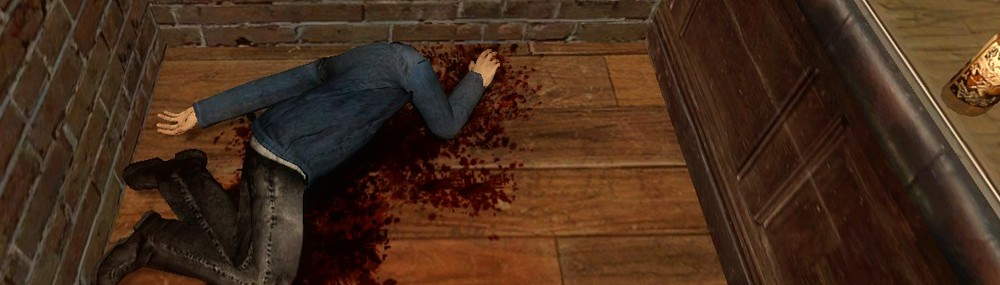

Кровавая расправа в Брокере. Владелец бара убит при неизвестных обстоятельствах
Либерти-Сити, Брокер, 22 ноября 2007 года

Очередное жестокое преступление потрясло жителей Брокера. В одном из местных баров на Whiskey Road было обнаружено тело его владельца, мужчины по имени Edward White. По предварительным данным, неизвестный или неизвестные открыли огонь внутри заведения, после чего скрылись с места происшествия.
Характер полученных повреждений указывает на применение оружия крупного калибра, предположительно дробовика. Мужчина погиб на месте. Обстоятельства нападения пока остаются невыясненными.
Особое внимание привлекает тот факт, что денежные средства из кассы заведения остались нетронутыми. Это ставит под сомнение версию об ограблении и заставляет обратить внимание на возможные личные мотивы преступления.
По одной из версий, причиной расправы мог стать конфликт с представителями нелегальной группировки, предположительно требовавшими от владельца заведения регулярные выплаты за так называемую защиту. Источники, знакомые с ситуацией в районе, допускают, что White мог отказаться от подобных требований. Официального подтверждения этой информации пока нет.
Расследование осложняется практически полным отсутствием записей с камер наблюдения. Ни внутри бара, ни на прилегающей территории подходящих видеозаписей обнаружить не удалось. Не исключается, что преступники могли воспользоваться переулком, ведущим к зданию, оставшись вне поля зрения возможных свидетелей.
На данный момент полиция не располагает достоверными сведениями о количестве нападавших и направлении их отхода.
Брокер продолжает сталкиваться с проблемой уличной преступности, однако подобные нападения уже выходят за рамки обычных ограблений. Если версия о вымогательстве подтвердится, это может свидетельствовать о присутствии организованных преступных групп, пытающихся установить собственный порядок на улицах района.
Кто следующий откажется платить? И сколько ещё подобных случаев потребуется, прежде чем обещанное финансирование полиции превратится в реальную защиту жителей?
Редакция продолжит следить за расследованием.
Лучше всего отображается при разрешении 800x600.
Вы наш посетитель номер 000417